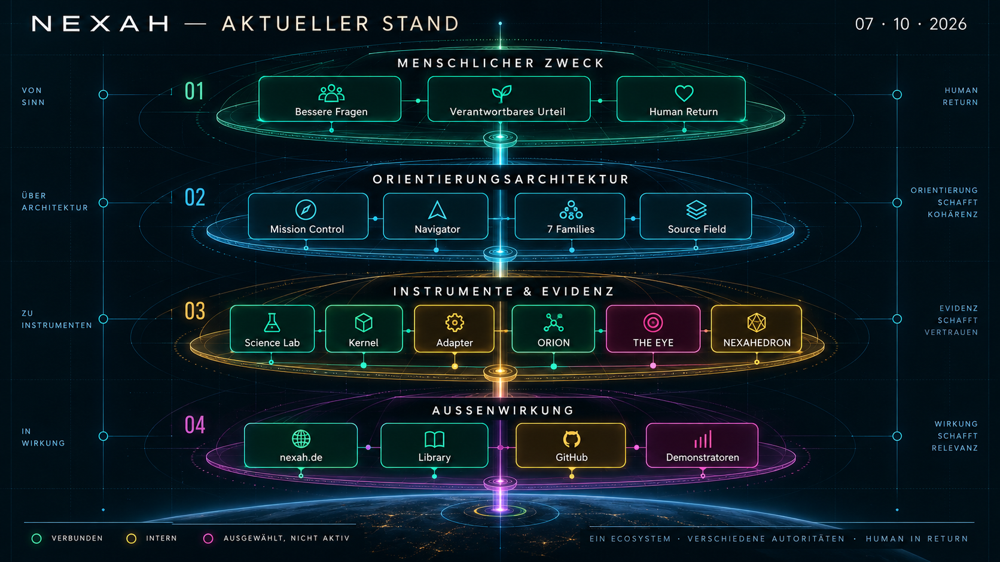
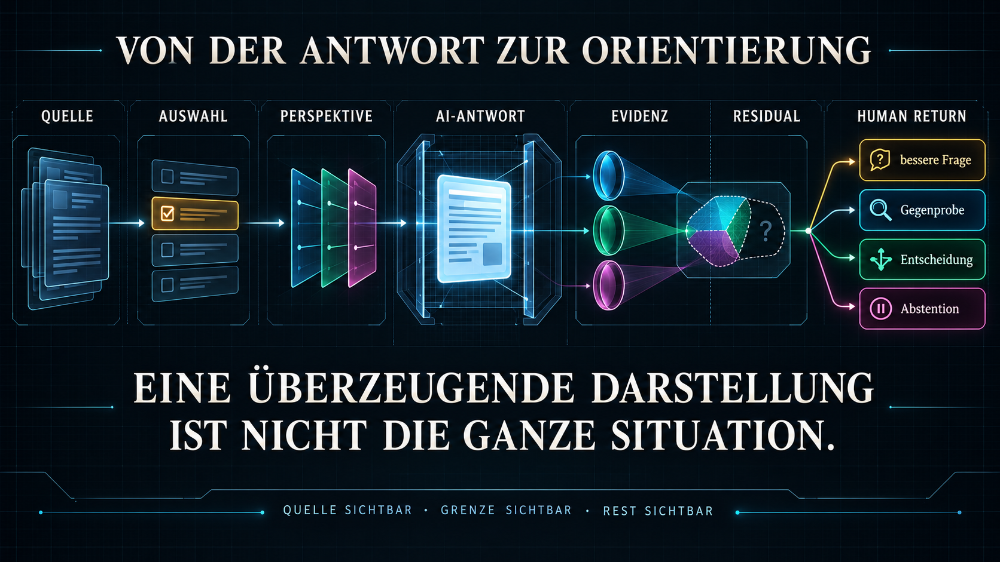
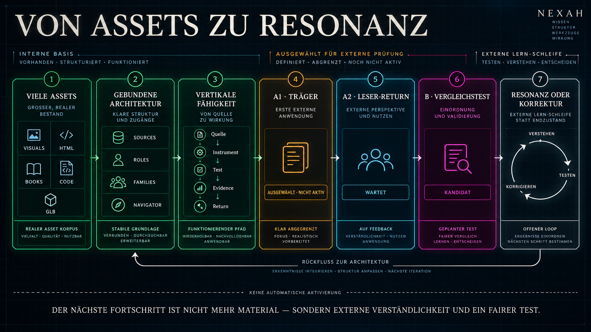

Was bedeutet der erreichte Stand?
A0 ist als zusammenhängendes Werk und wissenschaftlicher Rahmen sichtbar. Der nächste Fortschritt liegt nicht in mehr Material, sondern in Auswahl, Grenze und lesbarer Rückgabe.
Owner Return lesen →NEXAH · INTERNAL ORIENTATION INSTRUMENT
Mission Control liest den gegenwärtigen Stand, bindet ihn an Owner View und Strategy und öffnet daraus die zulässigen Routen in die bestehenden Desks. Die Desks bleiben Arbeitsräume mit eigener Autorität und eigenem Return.
OWNER RETURN · STRATEGY · ACTIVE MISSION
Diese Fläche ist die kommentierte Rückgabe von Mission Control an den Human Owner. Sie verdichtet den Bestand, ohne Science, Framework, Builder oder Publishing zu übernehmen. Erst aus dieser Lesart werden die gegenwärtig zulässigen Desk-Routen sichtbar.
A0 ist als zusammenhängendes Werk und wissenschaftlicher Rahmen sichtbar. Der nächste Fortschritt liegt nicht in mehr Material, sondern in Auswahl, Grenze und lesbarer Rückgabe.
Owner Return lesen →Human, Science und Builder bleiben getrennte Stimmen desselben Werks. Öffentliche und interne Flächen werden gebunden, geprüft und nicht durch eine neue Gesamtarchitektur ersetzt.
Strategische Einordnung →Die kuratierte A0/NEXAHEDRON-Projektion ist öffentlich ausgeliefert. Science Desk, NSN und Mission Control bleiben intern; wissenschaftliche Publikation ist nicht freigegeben. NEXAH- und Scarabæus-Cuts, Rechte, Accessibility, integrierte Source-to-live-Belege und Rollback bleiben Missionsgates.
Aktive Mission lesen →Authority: Owner View deutet · Strategy ordnet · Mission Control koordiniert · der jeweilige Desk behält seine fachliche Autorität.
AUTHORIZED EXITS · EXISTING DESK IDENTITIES
Die Desks sind keine zweite Inhaltsordnung. Sie sind typisierte Ausgänge aus der strategischen Lesart: offen, mitführend, nachgelagert oder gehalten — jeweils mit Grenze und erwartetem Return.
A0 besitzt genügend zusammenhängendes Material für eine begrenzte öffentliche Form. Der Auftrag ist jetzt Auswahl, Trennung, Prüfung und wahrheitsgemäße Freigabe — nicht die Vergrößerung des Korpus.
Der öffentliche Weg darf die wissenschaftliche Grenze nicht überschreiben. A0 Research Desk, Findings, Protokolle und Claim Boundaries bleiben deshalb als Quellenautorität angebunden, ohne einen neuen Research-Zyklus zu öffnen.
Fieldbook, Human View, Mathfield und Games können den gebundenen Gegenstand erfahrbar machen. Diese Route trägt die öffentliche Form, ersetzt aber weder Auswahl noch Evidenzprüfung.
Outreach beginnt erst mit einem freigegebenen Gegenstand, einem konkreten Gegenüber und einer ehrlichen Frage. Gate 0 erzeugt daher noch keinen Kontaktauftrag.
Framework, technische Integration, der unabhängige Scarabæus-Werkraum und Incoming bleiben Teil des Systems. Aus der aktuellen Mission folgt jedoch keine neue Aktivierung dieser Räume.
Die vollständigen Authority-, STOP- und Handoff-Regeln bleiben im bestehenden Desk UX Operating Guide maßgeblich.
BOUND SURFACES · OPEN ON DEMAND
Die Routen oben führen. Hier bleibt der vollständige Arbeitsbestand erhalten: Desks, Lesepfade, Bücher, Ansichten, Returns, Bindings und Quellen. Jede Fläche öffnet sich einzeln und schließt wieder in Mission Control zurück.
PRIVATE MISSION CONTROL ENTRY · EXISTING A0 IDENTITY
Der helle Arbeitstisch im dunklen Kontrollraum: Mission Control hält Currentness, Priorität und Release-Gates; A0 behält wissenschaftliche Quellen-, Evidenz- und Claim-Autorität. Dieser Eingang erzeugt keinen zweiten Desk.
A0 DESK · FÄCHEREin Werk, fünf Arbeitsräume.
01Orientieren & Lesenpublic candidate 02Arbeiten & Entscheidenprivate operational 03Forschen & Prüfenpublic summary 04Bauen & Spielenrelease review 05Protokolle & Rückkehrmixed / reviewBoundary: Der kanonische Desk bleibt während der Split-Vorbereitung im Science Lab. Diese private Mission-Control-Fläche ist ein Einstieg und Currentness-Gate, keine Kopie, keine neue wissenschaftliche Identität und keine Publikationsfreigabe.
PRIVATE OVERLAY · SOURCE-BOUND LINEAGE · NO PUBLIC ACTIVATION
Die interne Rückseite der neuen NSN-Linse: Desk 01, Verträge, Comparator, feste Demonstrationen, Kernel-Adapter und NEXAHEDRON-Result-Boundary bleiben als eine Herkunftslinie lesbar. ORION bleibt ein separater Gateway — nicht die nächste THE-EYE-Stufe.
Current disposition: implementiert und erhalten · öffentliche Route nicht verlinkt · NSN-Public-Allowlist leer · keine neue Identity, Study, Family oder wissenschaftliche Aussage.
START HERE · EMPFOHLENER EINSTIEG
Eine Grundbeschreibung führt zu den gemeinsamen Achievements. Danach vertiefen Owner, Human, Science und Builder denselben Bestand aus vier klar getrennten Perspektiven.
Orientierungsfolge · Dokumente öffnen im internen Reader · Detailbibliothek und Source Field folgen darunter.
BLOCK A · DOCUMENTARY CUT · SOURCE BOUND · NOT ACTIVE RESEARCH
Das Buch bleibt der stabile Reader. Forschungsprotokoll, Field Notes, Owner Cut, Quellenbasis und strategischer Return sind darunter als ein begrenzter A0-Rahmen gebunden.
SCIENCE RESEARCH DESK · THREE STABLE LENSES
Die neue Science-Hauptseite führt zuerst über drei stabile Linsen und dann zu fünf bestehenden Flagships: A0 Foundation, NCS Return & Clockwork, GAME 4 LIFE +1, Three-Domain Transition Test und IEEE300 Graph-to-Grid. Fachgebiete bleiben präzise Metadaten statt Primärnavigation.
A0 scientific authority: Science Desk. Mission Control zeigt Currentness, Priorität und Rückbindung · bestehende Identitäten wiederverwendet · kein neuer Study- oder Graph-Eintrag · active research 0 · nicht öffentlich.
STATUS · PURPOSE · DEVELOPMENT
Drei Ansichten dokumentieren den Stand vom 7. Oktober: was verbunden ist, was NEXAH für Menschen tun soll und wie der nächste externe Lernschritt begrenzt bleibt.



Dokumentarische Orientierungsbilder · kein Produkt-, Nutzen- oder Wissenschaftsnachweis.
OVERVIEW LIBRARY · CURRENTNESS LAYERS
Der Frontstage besteht aus Grundbeschreibung, Achievements und vier Views. Hier liegen Quellen, aktuelle Spezialansichten, unterstützende Verweise und historische Navigation sichtbar getrennt.
SCIENCE LAB RETURN · V1.3 BOUNDED RECOVERY
Geometria Nova, Resonance Cathedral und die Multi-Grid-Familie sind als hash-gebundene Modell-Lineage zurückgebunden. Der Science Navigator zeigt außerdem den transversal lesbaren Crosswalk aus sieben Connection Families und acht typed fields.
Identifier- und Mesh-Familien-Lineage sind belegt. Historischer Generator, Rath-Semantik und GLB→USDZ-Konvertierung bleiben ausdrücklich offen.
SOURCE FIELD ↔ SCIENCE NAVIGATOR
Ein generierter Crosswalk verbindet Locator mit kuratierten Entitäten. Bindung bedeutet Navigation und Provenienz — keine automatische Aufwertung von Evidence oder Claims.
ELIGIBILITY PASS · REVIEW ROUTING
Die zweite Achse trennt echte Review-Kandidaten von Versionsfamilien, Sammlungsoberflächen, Mirrors, Builddateien und bereits geschlossenen Bindungen.
Binding Ledger wird geladen …
SOURCE FIELD